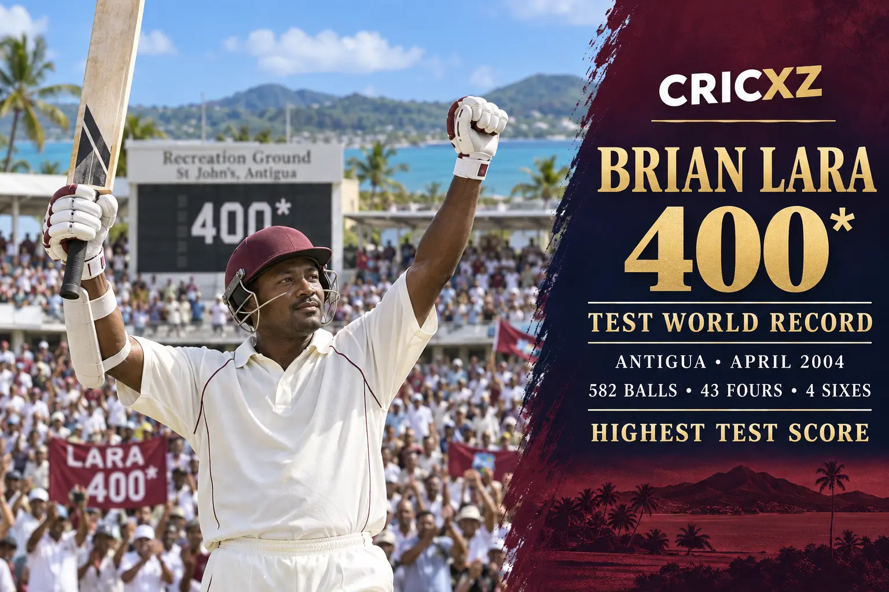

Test Batting
- Matches
- 131
- Innings
- 232
- Runs
- 11,953
- Highest score
- 400*
- Batting average
- 52.88
- Centuries
- 34
- Fifties
- 48

Brian Lara scored 22,358 international runs and produced two of cricket's most celebrated batting records: 400 not out in a Test and 501 not out in first-class cricket.
Career statistics are final.
Lara played his final international match in April 2007. The figures above were checked against ICC and established statistical records.
Across a 17-year international career, Lara combined a high backlift, exceptional footwork and fluent strokeplay with the concentration required for monumental innings. He remains the West Indies' leading Test run-scorer.

In April 2004 at the Recreation Ground in St John's, Antigua, Lara scored an unbeaten 400 against England from 582 balls, with 43 fours and four sixes. The innings reclaimed the individual Test record he had first held after making 375 at the same ground in 1994.
Only weeks after his 375 in 1994, Lara made 501 not out for Warwickshire against Durham at Edgbaston. That innings remains the highest individual score in first-class cricket and completed one of the most extraordinary record-breaking seasons by any batter.
6 December 1990 – 27 November 2006
Debuted against Pakistan at Lahore and made his final Test appearance against the same opponent at Karachi.
9 November 1990 – 21 April 2007
Debuted against Pakistan at Karachi and ended his international career against England in the 2007 World Cup.
Three leadership periods
Led the West Indies in Tests and ODIs while remaining the team's central batting figure.
Set the world record against England at Antigua in 2004.
Established the record for Warwickshire against Durham in 1994.
Finished as the region's leading run-scorer in Test cricket.
Made 34 Test hundreds and 19 ODI hundreds.
Passed Garry Sobers' mark at Antigua in 1994.
Produced a celebrated maiden Test century against Australia in 1993.
Was inducted in recognition of his outstanding international career.
Represented the West Indies from 1990 to 2007.
Led the regional side during multiple periods of his career.
Set the individual Test record with 375, then reclaimed it with 400*.
CricXZ is an independent cricket publication and is not affiliated with the ICC, Cricket West Indies or any team.
Read Chris Gayle's career records, explore AB de Villiers' statistics, or browse all CricXZ player profiles.